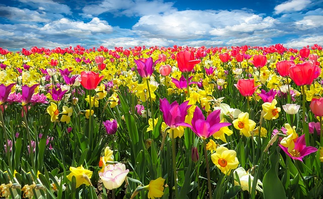
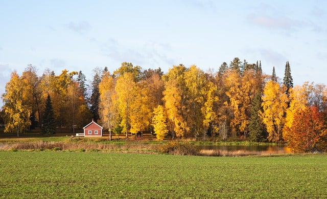

Seasons
One of the main reasons I moved back here
One of the main reasons I moved back here
OK, first of all, probably anybody who lives in the northern part of the Europe knows the difference between real winter snow vs. the mild powder white rain that might happen in the center or southern Europe
With spring I must admit, although Finland has beautiful and long spring (with second and third and fourth winters), Holland has it better. Basically the tulips are the main reason Holland tops any country’s spring time, however also the weather is the best April It is like our June, around +20 degrees, warm breeze and light but not too hot. After that is just devastating but let's go there next.
Summer is still the most manageable for me at least. I personally cannot handle more than +24 degrees so summer here is just on point. Plus the never ending lightness dur-ing the nights. In holland it goes over +35 and add some stiff air and humidity to that, that country aint Spain so nope, just awful.
Autumn is just never ending misery in Holland. Sure it is warm there, but then the rain starts and it lasts from October until February and no it’s not soft rain like in Finland. Here the leaves are just having fantastic colours and you feel like gradually moving forward with time when switching between seasons.
